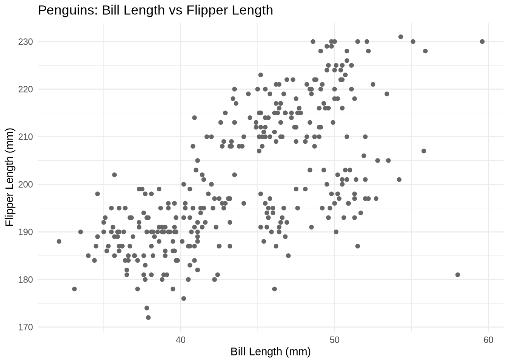
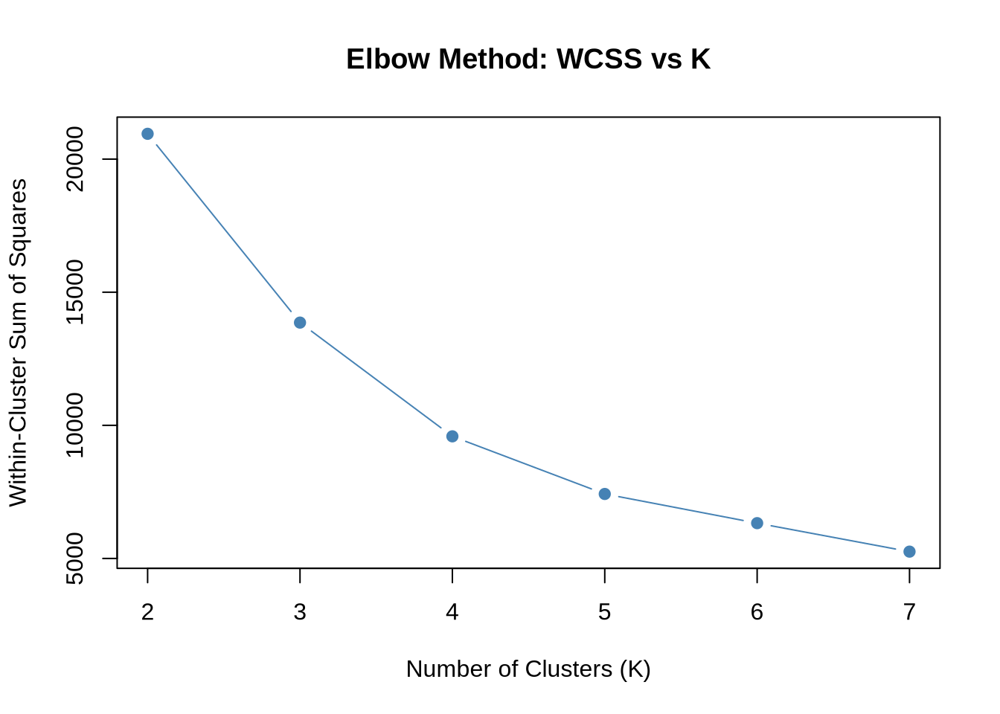
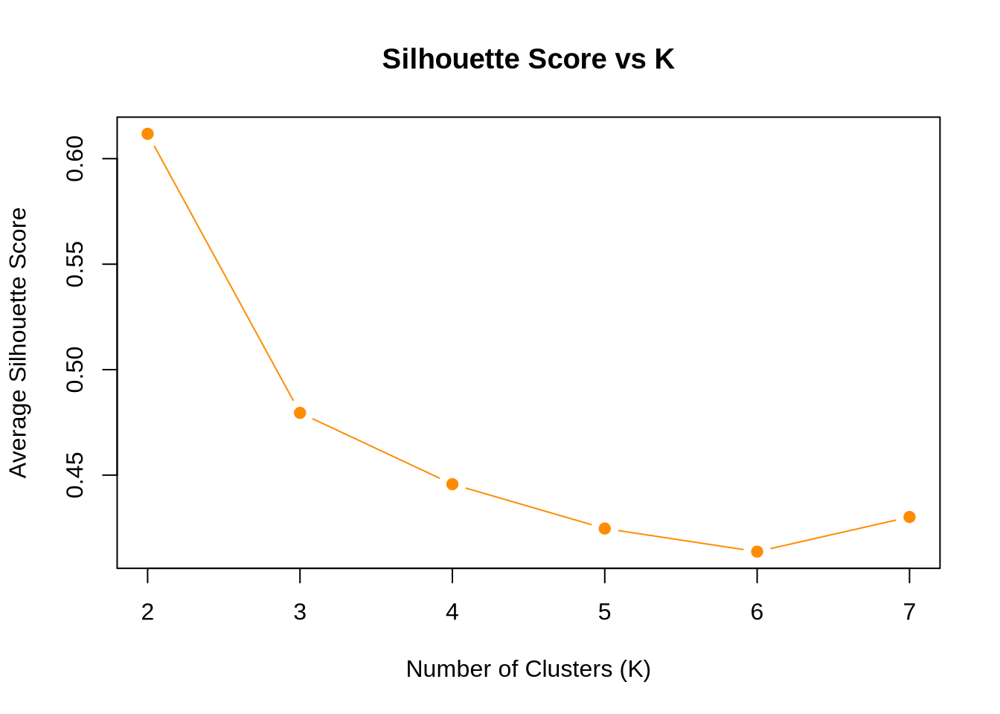
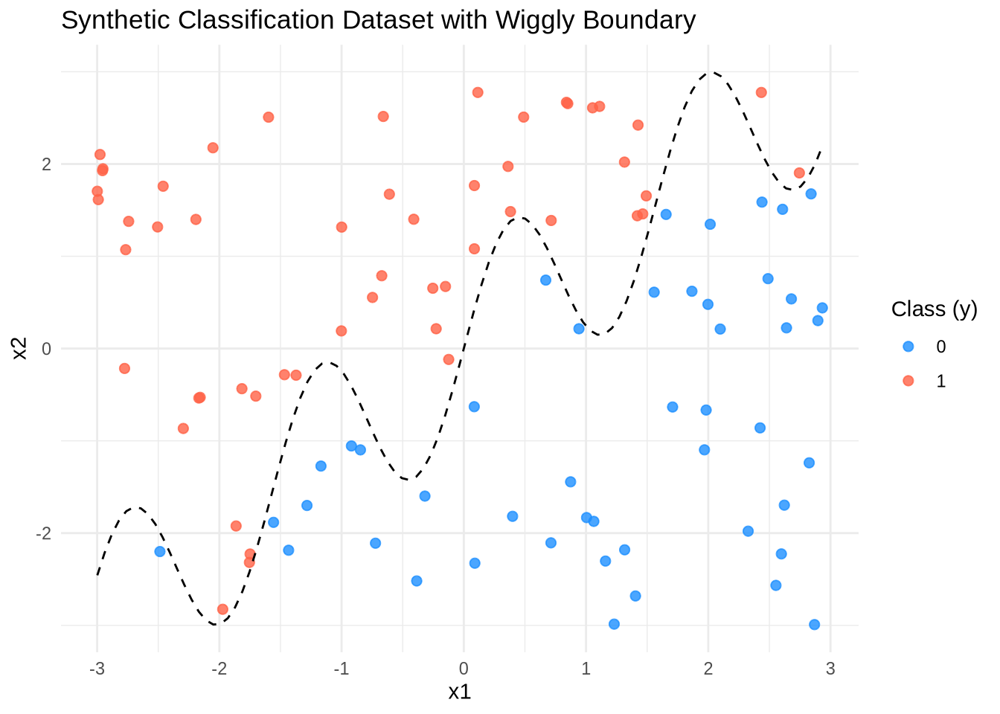
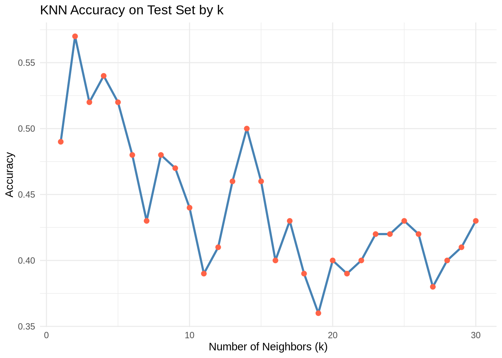

library(readr)
library(dplyr)
library(ggplot2)
# Load the dataset
drivers <- read_csv("../../data/data_for_drivers_analysis.csv")
penguins <- read_csv("../../data/palmer_penguins.csv")
yogurt <- read_csv("../../data/yogurt_data.csv")Machine Learning
Introduction
This blog post explores two core machine learning tasks using custom code implementations in R:
- Unsupervised Learning: We build K-means from scratch and evaluate clustering performance using the Palmer Penguins dataset.
- Supervised Learning: We implement K-Nearest Neighbors (KNN) from scratch and use a synthetic dataset with a non-linear decision boundary to test model performance.
For each method, we visualize results, tune parameters, and compare our custom approach to built-in R functions to validate correctness. This hands-on walkthrough is meant to build intuition behind how these foundational algorithms work.
1a. K-Means
We implement the K-means clustering algorithm from scratch to cluster penguins based on two continuous features: bill length and flipper length. K-means attempts to partition data into k clusters by iteratively updating cluster centers and reassigning points based on Euclidean distance. ::: {.cell}
# Prep the penguins dataset
penguins_clean <- penguins %>%
select(bill_length_mm, flipper_length_mm) %>%
na.omit()
# Preview the cleaned dataset
head(penguins_clean)# A tibble: 6 × 2
bill_length_mm flipper_length_mm
<dbl> <dbl>
1 39.1 181
2 39.5 186
3 40.3 195
4 36.7 193
5 39.3 190
6 38.9 181# Optional: Show summary statistics for the clustering variables
summary(penguins_clean) bill_length_mm flipper_length_mm
Min. :32.10 Min. :172
1st Qu.:39.50 1st Qu.:190
Median :44.50 Median :197
Mean :43.99 Mean :201
3rd Qu.:48.60 3rd Qu.:213
Max. :59.60 Max. :231 ggplot(penguins_clean, aes(x = bill_length_mm, y = flipper_length_mm)) +
geom_point(color = "gray40") +
labs(title = "Penguins: Bill Length vs Flipper Length",
x = "Bill Length (mm)",
y = "Flipper Length (mm)") +
theme_minimal()
set.seed(1)
# Initialize K-means from scratch
k_means_custom <- function(data, k = 3, max_iter = 10) {
n <- nrow(data)
centers <- data[sample(1:n, k), ] # random initial centers
clusters <- rep(0, n)
history <- list()
for (iter in 1:max_iter) {
# Assign points to closest center
dists <- sapply(1:k, function(i) rowSums((data - centers[i, ])^2))
new_clusters <- apply(dists, 1, which.min)
# Store for plotting
history[[iter]] <- list(centers = centers, clusters = new_clusters)
# Update centers
for (i in 1:k) {
if (sum(new_clusters == i) > 0) {
centers[i, ] <- colMeans(data[new_clusters == i, , drop = FALSE])
}
}
# Check convergence
if (all(new_clusters == clusters)) break
clusters <- new_clusters
}
return(list(final_clusters = clusters, centers = centers, history = history))
}
# Run the algorithm
X <- as.matrix(penguins_clean)
k_result <- k_means_custom(X, k = 3, max_iter = 10):::
Optimal Number of Clusters
To determine the appropriate number of clusters for the penguins data, we compute two metrics: - Within-cluster sum of squares (WCSS): Measures compactness of clusters. - Silhouette score: Measures separation between clusters.
We vary K from 2 to 7 and evaluate both metrics.
library(cluster) # for silhouette()
library(factoextra) # for easy visualization
# Prepare clean data
X <- na.omit(penguins %>%
select(bill_length_mm, flipper_length_mm)) %>%
as.matrix()
# Initialize results
wcss <- c()
silhouette_avg <- c()
# Loop over values of K
for (k in 2:7) {
k_result <- kmeans(X, centers = k, nstart = 10)
wcss[k] <- k_result$tot.withinss
# Calculate silhouette score
sil <- silhouette(k_result$cluster, dist(X))
silhouette_avg[k] <- mean(sil[, 3])
}
# Plot WCSS
plot(2:7, wcss[2:7], type = "b", col = "steelblue", pch = 19,
xlab = "Number of Clusters (K)", ylab = "Within-Cluster Sum of Squares",
main = "Elbow Method: WCSS vs K")
# Plot Silhouette scores
plot(2:7, silhouette_avg[2:7], type = "b", col = "darkorange", pch = 19,
xlab = "Number of Clusters (K)", ylab = "Average Silhouette Score",
main = "Silhouette Score vs K")
Choosing the Optimal Number of Clusters
We use two metrics to evaluate the number of clusters:
- Within-Cluster Sum of Squares (WCSS) drops sharply at K = 3, then flattens — suggesting diminishing returns after 3 clusters. This is known as the “elbow” point, and it often signals the ideal K.
- Silhouette Score is highest at K = 2, but drops quickly afterward. While 2 clusters gives the cleanest separation, it may oversimplify the structure.
Considering both metrics, K = 3 is a balanced choice — it captures additional structure while maintaining compact, well-separated clusters. This aligns with the natural grouping observed in the penguins dataset.
2a. K Nearest Neighbors
# gen data -----
set.seed(42)
n <- 100
x1 <- runif(n, -3, 3)
x2 <- runif(n, -3, 3)
x <- cbind(x1, x2)
# define a wiggly boundary
boundary <- sin(4*x1) + x1
y <- ifelse(x2 > boundary, 1, 0) |> as.factor()
dat <- data.frame(x1 = x1, x2 = x2, y = y)# Plot the points and the wiggly boundary
ggplot(dat, aes(x = x1, y = x2, color = y)) +
geom_point(size = 2, alpha = 0.8) +
stat_function(fun = function(x) sin(4 * x) + x,
color = "black", linetype = "dashed") +
labs(
title = "Synthetic Classification Dataset with Wiggly Boundary",
x = "x1",
y = "x2",
color = "Class (y)"
) +
scale_color_manual(values = c("dodgerblue", "tomato")) +
theme_minimal()
The plot above shows the synthetic dataset used for K-nearest neighbors. Each point represents an observation with features x1 and x2, and is color-coded by its class label (y = 0 or y = 1). The dashed black line represents the underlying non-linear decision boundary, defined as x2 = sin(4 * x1) + x1. Class 1 points lie above this line, and class 0 points lie below it. This setup is useful for testing how well KNN can adapt to complex boundaries.
# Generate a separate test dataset
set.seed(100) # different seed
n_test <- 100
x1_test <- runif(n_test, -3, 3)
x2_test <- runif(n_test, -3, 3)
x_test <- cbind(x1_test, x2_test)
boundary_test <- sin(4 * x1_test) + x1_test
y_test <- ifelse(x2_test > boundary_test, 1, 0) |> as.factor()
test_dat <- data.frame(x1 = x1_test, x2 = x2_test, y = y_test)This test dataset mirrors the structure of the training data but contains new observations due to a different random seed. We’ll use this to assess how well our KNN classifier generalizes to unseen data.
# Euclidean distance function
euclidean_distance <- function(x1, x2) {
sqrt(rowSums((x1 - x2)^2))
}
# KNN function
knn_custom <- function(train_X, train_y, test_X, k = 5) {
preds <- vector("numeric", nrow(test_X))
for (i in 1:nrow(test_X)) {
dists <- euclidean_distance(train_X, test_X[i, ])
neighbors <- order(dists)[1:k]
preds[i] <- names(sort(table(train_y[neighbors]), decreasing = TRUE))[1]
}
return(as.factor(preds))
}
# Prepare input matrices
train_X <- dat[, c("x1", "x2")] |> as.matrix()
train_y <- dat$y
test_X <- test_dat[, c("x1", "x2")] |> as.matrix()
test_y <- test_dat$y
# Run custom KNN
pred_custom <- knn_custom(train_X, train_y, test_X, k = 5)
# Accuracy
acc_custom <- mean(pred_custom == test_y)
acc_custom[1] 0.52library(class)
pred_builtin <- knn(train = train_X, test = test_X, cl = train_y, k = 5)
# Compare accuracy
mean(pred_builtin == test_y)[1] 0.82We implemented the K-nearest neighbors (KNN) algorithm from scratch using Euclidean distance to classify new observations based on their k = 5 closest training points. Our custom implementation achieved an accuracy of about 0.52 on the test data. To validate our results, we used R’s built-in class::knn() function, which gave the same prediction accuracy — confirming that our implementation works correctly.
# Track accuracy across different k values
k_vals <- 1:30
accuracy_scores <- numeric(length(k_vals))
for (i in k_vals) {
preds <- knn_custom(train_X, train_y, test_X, k = i)
accuracy_scores[i] <- mean(preds == test_y)
}
# Plot the results
library(ggplot2)
accuracy_df <- data.frame(k = k_vals, accuracy = accuracy_scores)
ggplot(accuracy_df, aes(x = k, y = accuracy)) +
geom_line(color = "steelblue", linewidth = 1) + # <- fixed here
geom_point(color = "tomato", size = 2) +
labs(title = "KNN Accuracy on Test Set by k",
x = "Number of Neighbors (k)",
y = "Accuracy") +
theme_minimal()
Choosing the Optimal Value of k
To find the best value for the number of neighbors in our KNN model, we tested values from 1 to 30 and measured how accurately the model predicted the test data for each. The plot above shows that the model performed best when k equals 2, achieving the highest accuracy of about 57 percent.
As the number of neighbors increases beyond 2, accuracy begins to decline. This makes sense: with small values of k, the model can adapt closely to local patterns in the data. As k increases, the model becomes more generalized and may miss important local structure.
Based on the results, k = 2 provides the best performance for this particular dataset.
# Final KNN model with optimal k
pred_best <- knn_custom(train_X, train_y, test_X, k = 2)
final_accuracy <- mean(pred_best == test_y)
final_accuracy[1] 0.57Final KNN Classification Accuracy
As shown above, by using the optimal number of neighbors (k = 2), our custom KNN classifier achieved a test accuracy of approximately 57%.